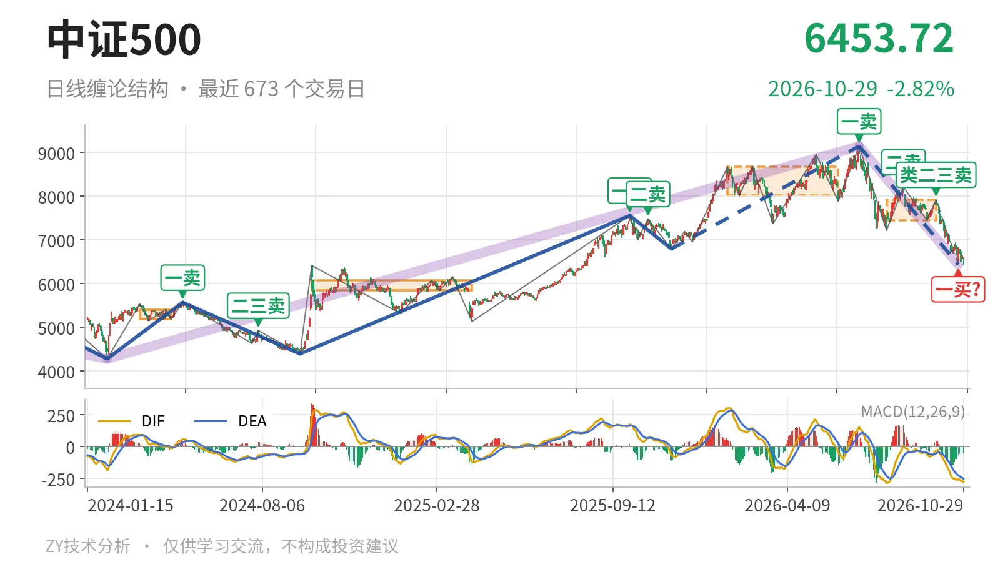
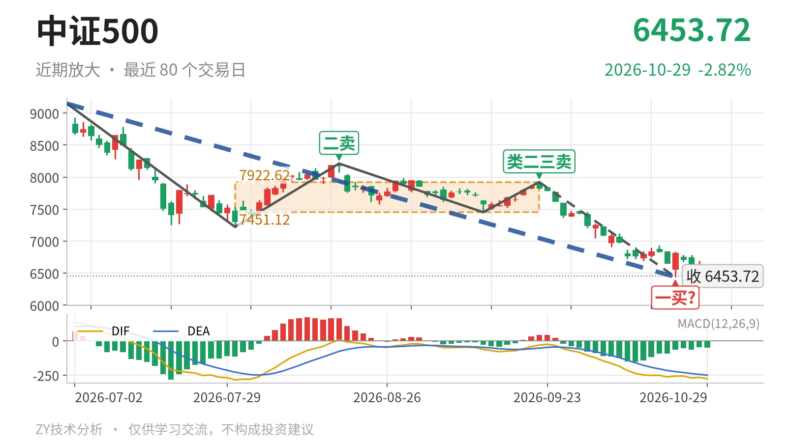

中证500｜跌破7451中枢，一买未定

最近日线中枢 7451.12—7922.62点，收盘位于中枢之下
一句话：当前处7月1日以来下跌段，暂定一买待笔结束确认
🧭 走势结构：仍处7月1日以来的下跌段
当前仍处7月1日以来的下跌段，线段层面的回落没有结束。2024年2月5日至2026年7月1日从4281.24点涨到9147.56点，上涨约113.7%；7月1日后转入同级别下跌段，从9147.56点最低到6440.29点，跌约29.6%。最近4根K线最高6787.32点、最低6450.54点，没有改变这一结构；日线级别不是中枢震荡，而是下跌段内部的反弹与回落交错。

📉 中枢与位置：中枢下移，离开7451点下沿
最新收盘6453.72点，低于7月30日至9月22日日线笔中枢下沿7451.12点约13.4%。该中枢区间为7451.12—7922.62点，中轴7686.87点；对比1月26日至6月8日的日线笔中枢8014.66—8671.35点，中枢已经在往下走。当前价格不是在中枢内摆动，而是向下离开中枢，且离下沿接近1000点，结构位置偏弱。
🔖 买卖点：一买暂定，卖点逐级压降
日线笔买卖点中，最近的结构落点是10月23日的一买6440.29点，但只能先当暂定的一买。它所在的9月22日至10月23日下跌笔还在延续，因此这个一买会随这一笔的延伸而变化。此前卖点排布是7月1日一卖9147.56点、8月18日二卖8211.31点、9月22日类二三卖7922.62点，卖点一个比一个低。当前价格也低于2025年11月24日线段三买6797.50点，说明该三买之后的上行延续已被打破。

⚖️ 背驰：新低不新弱，但DIF低点没钉死
最近两个同向下跌笔对比，7月1日至7月30日下跌笔绿柱面积2687、DIF低点-285.2；9月22日至10月23日下跌笔在创出6440.29点新低时，绿柱面积只有1443，对应DIF低点-263.4。面积收缩、DIF低点高于前一笔，呈“新低不新弱”。但最新DIF已到-276.4、绿柱-51.3，说明当前下跌笔的DIF低点尚未钉死，这笔背驰只能视为还在构造中。
🧩 关键位置观察：先看7451点修复，再看6440点
7451点是最近日线笔中枢下沿，反抽若回不到7451点上方，反弹只是中枢下沿的次级别反抽，结构上仍有向下延续的条件。若能重新站上7451点，7月1日以来的下跌更可能转为围绕该中枢的震荡扩展。下方6440点是暂定一买低点，若被继续压低，这个一买位置会随下跌笔延续而改变。综合看，价格处中枢下方、卖点逐级下压，但下跌笔面积收缩，结构按偏弱看待，同时背驰尚未成立。
⚠️ 本文为基于公开行情数据的缠论技术结构记录，由程序自动计算并生成，仅供学习交流，不构成任何投资建议。市场有风险，投资需谨慎。